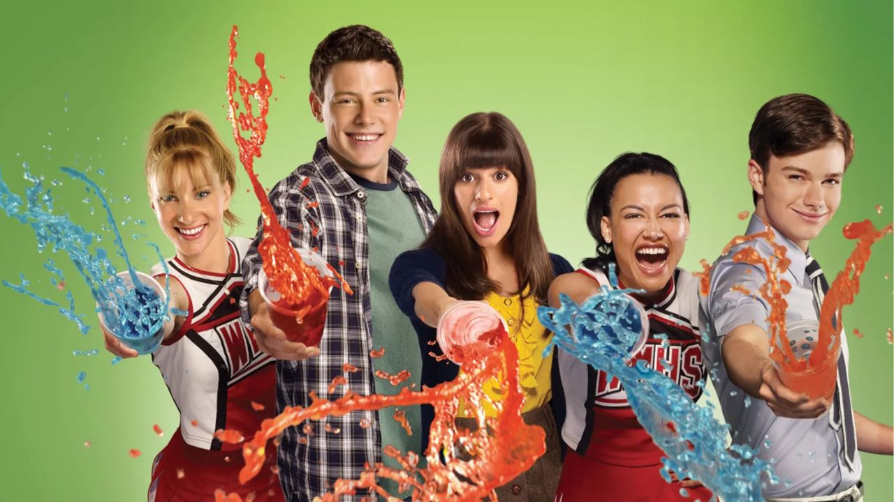
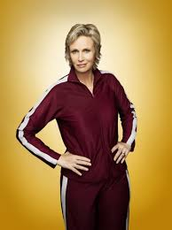
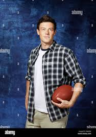

Glee é uma série musical de comédia e drama que conquistou público mundial ao retratar a trajetória de um grupo de estudantes integrantes do coral escolar New Directions, da fictícia William McKinley High School. A produção destaca temas como amizade, inclusão, diversidade e superação, combinando apresentações musicais marcantes com histórias emocionantes.
Temas principais
- Amizade
- Amor e relacionamentos
- Aceitação
- Bullying
- Preconceito
- Descoberta de identidade
- Sonhos e ambições
- Família
- Inclusão
- Crescimento pessoal
Como surgiu a ideia de criar Glee?
Ian Brennan, criador da série, teve a ideia com base em suas próprias experiências no coral do ensino médio. Suas vivências adolescentes deram origem ao roteiro que foi transformado em série pelos cocriadores Ryan Murphy e Brad Falchuk.
Integrantes principais
Rachel Berry · Finn Hudson · Will Schuester · Kurt Hummel · Mercedes Jones · Artie Abrams · Tina Cohen-Chang

Quinn Fabray · Noah Puck · Santana Lopez · Brittany Pierce · Sue Sylvester · Emma Pillsbury
Personagens
Will Schuester
Professor responsável por reerguer o coral New Directions. É gentil, otimista e determinado a ajudar seus alunos.
Rachel Berry
Talentosa, ambiciosa e determinada. Seu maior sonho é se tornar uma estrela da Broadway.

Sue Sylvester
Treinadora das Cheerios, conhecida por sua personalidade sarcástica e competitiva.
Emma Pillsbury
Conselheira escolar sensível, organizada e muito dedicada aos estudantes.

Finn Hudson
Carismático e companheiro, Finn busca descobrir seu caminho e seus sonhos.
Momentos importantes
- A criação do New Directions
- As primeiras competições
- A evolução dos integrantes
- As formaturas e despedidas
- A vida depois do ensino médio
- O encerramento da história do grupo
✨ Qual personagem de Glee você seria?
Responda às perguntas e descubra qual integrante do New Directions combina com sua personalidade!